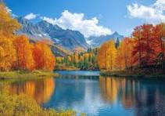

We can explore nature many much as there are many beauties in this world. Nature is the physical world and its phenomena, encompassing all living things and the independent forces that shape the Earth. It includes everything not made by humanity—from vast oceans and towering mountains to microscopic ecosystems and the fundamental laws of the universe.
If we want to explore the nature so it will take much much much time, as nature is very big and beautiful
Nature is a very majestic, beautiful and large. There are trees ,oceans and mountains and polar regions in nature
Nature is a very big gift of god
Mountains, rivers, forests, and wildlife are fundamental elements of Earth's natural geography and ecosystems. Together, they form interconnected habitats that regulate climate, maintain the water cycle, and support life.

Mountains : Massive, elevated landforms that rise high above the surrounding terrain, usually formed by shifting tectonic plates. They act as natural barriers, influence weather patterns, and are critical freshwater sources as snowmelt feeds into streams and lakes.
Rivers: Natural streams of flowing water that move from higher elevations (like mountains) toward oceans, lakes, or other bodies of water. They transport sediment, provide drinking water, and create fertile valleys for agriculture.